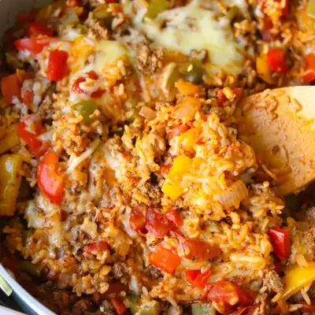

Unstuffed Peppers

Ingredients
- 1 tablespoon olive oil
- 1 pound lean ground beef
- 3 bell peppers, chopped (any color)
- 1 small onion, chopped
- 2 garlic cloves, minced
- 2 teaspoons Italian seasoning
- 2 tablespoons tomato paste
- 15 ounce can diced tomatoes
- 8 ounce favorite tomato sauce
- 1 cup beef broth (or water)
- 1 cup long grain white rice, rinsed
- 1 cup shredded cheese of choice
- 1 tablespoon balsamic vinegar (optional)
Steps
- Heat the oil in a skillet over medium-high heat. Add the ground beef and cook, stirring occasionally, about 3-5 minutes.
- Add the chopped bell peppers, onion, garlic, Italian seasoning along with a pinch of salt and pepper (leave out if serving to baby). Cook until the beef is fully cooked and the veggies are soft, about 5-7 minutes.
- Stir in the tomato paste and sauté for 1-2 minutes until fragrant. This step really deepens the flavor!
- Pour in the diced tomatoes, tomato sauce, broth. Stir, making sure to scrape the bottom of the skillet, and bring to a boil. Add the rice, then lower the heat, cover, and let it simmer for 15 minutes, or until the rice is tender.
- Once the rice is cooked, add the cheese on top, cover, and let the cheese melt for a few minutes. Drizzle a little balsamic vinegar for an extra depth of flavor—totally optional but delicious!
Recipe by Min Kwon · Kidfriendly Meals, from MJ and Hungryman. Saved here for personal use; the original has the full notes, tips and photos. Open original